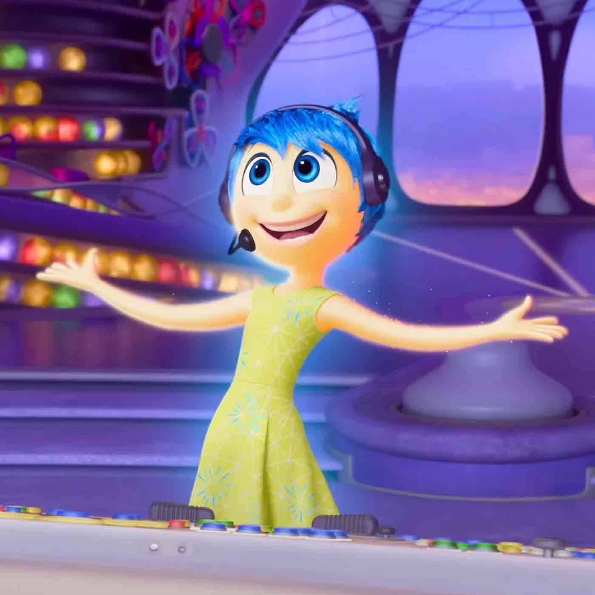
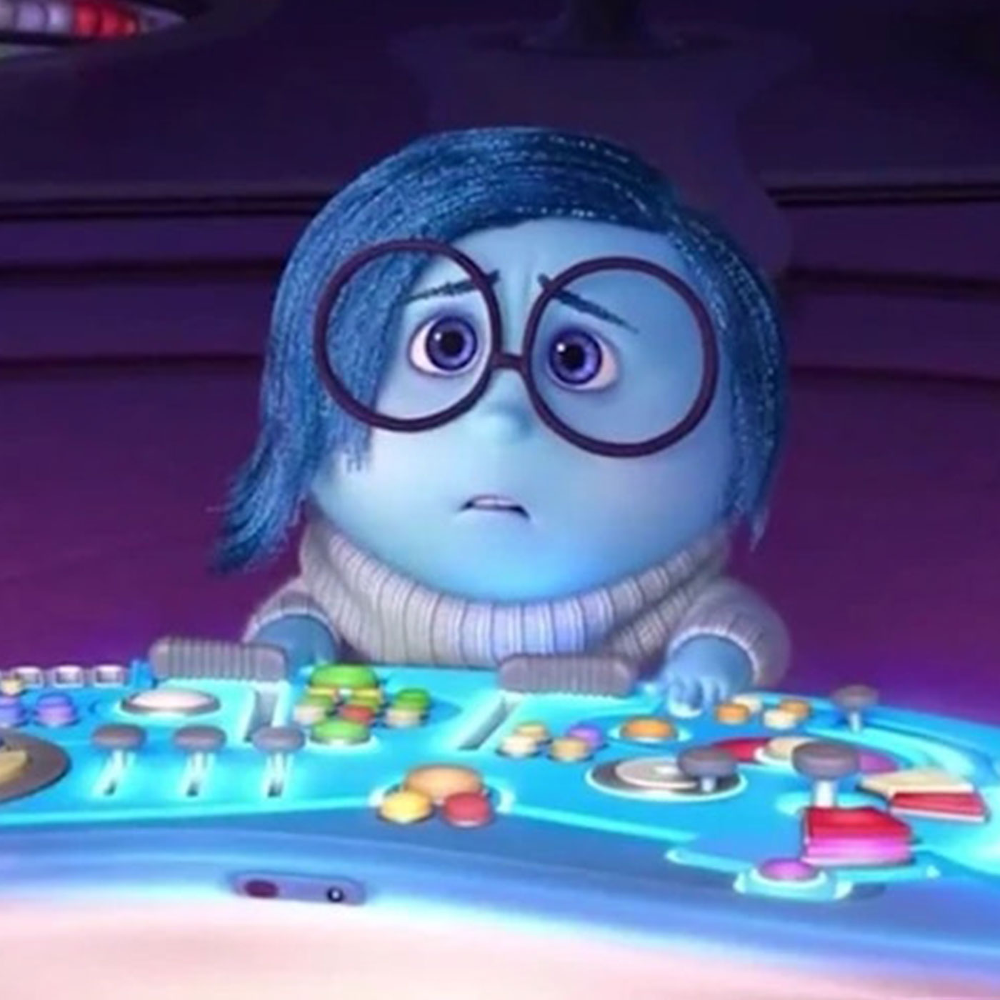
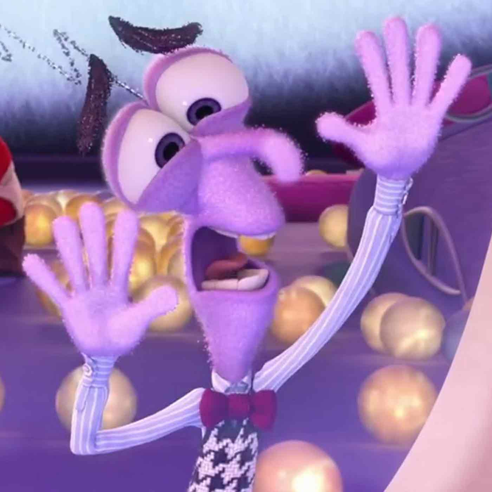
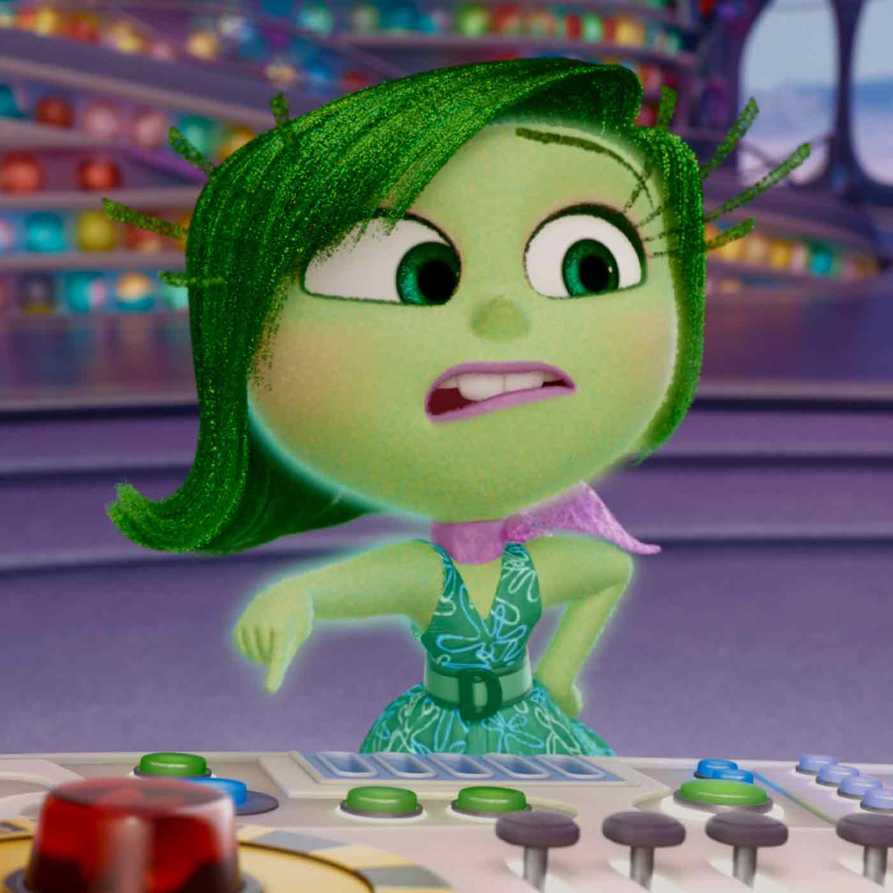
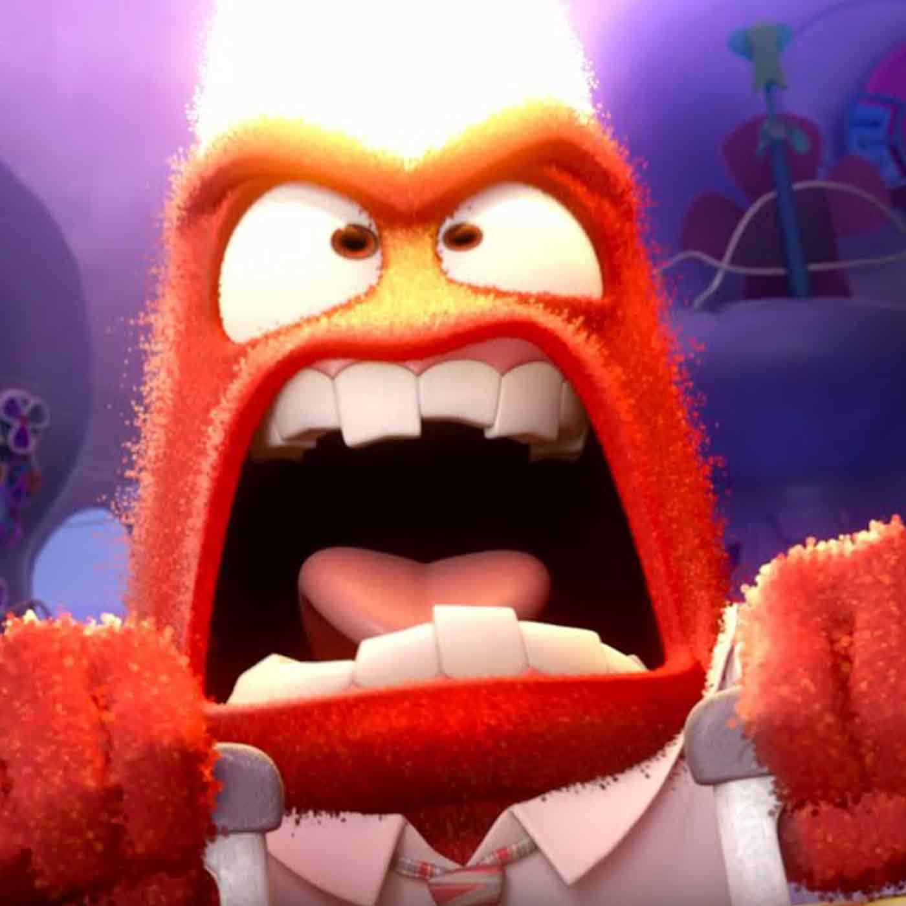

-

Joy
Played by Amy Pohler
Joy is an optimistic and energetic emotion who strives to keep Riley happy, always looking for the bright side of every situation.
-

Sadness
Played by Phyllis Smith
Sadness is a thoughtful and empathetic emotion who often feels overwhelmed but plays a crucial role in helping Riley process difficult experiences.
-

Fear
Played by Bill Hader
Joy is an optimistic and energetic emotion who strives to keep Riley happy, always looking for the bright side of every situation.
-

Disgust
Played by Mindy Kaling
Disgust is a sharp-witted and opinionated emotion, dedicated to protecting Riley from things that might be unpleasant, gross, or harmful.
-

Anger
Played by Lewis Black
Anger is a fiery and intense emotion, quick to flare up when things feel unfair or frustrating, driven by a desire for justice and resolution.